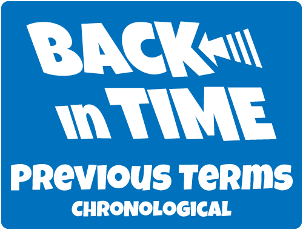

Word of the Day
|
|  |
This site was created to provide some insight into how my mind works. I know it sounds strange, but as folks talk (in person, on the phone, on radio, on TV, …) my thoughts process each of their words, along with every word combo with similar sounds, meaning, or spelling.
The people that live and work with me daily get to hear about 20% of those stray thoughts in the form of oft-risqué puns (although I’m sure it feels more like 90% to them).
Sometime in 2009, my wife told me to start writing my stupid puns down. Since I’m not good at following directions, I started my faux-cabulary list instead.
Peppered within you’ll also find some random musings that aren’t directly related to the whole fauxcabulary theme, but do fit nicely with the stated goal of “provid[ing] some insight into how my mind works”.
I hope you enjoy your visit. New fauxcabulary words are posted every day at midnight. The other content is added as it happens. So keep checking back.
— Joe
(ground·h0g)